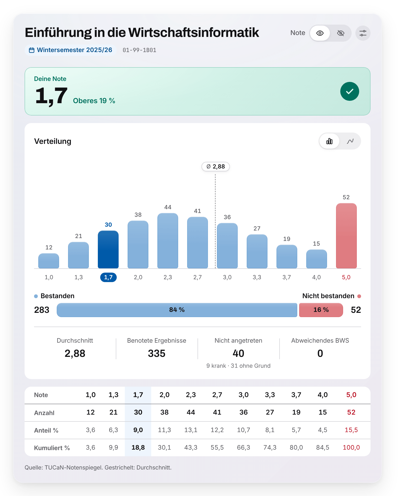

Userscript für TUCaN · TU Darmstadt
TUCaN-Notenspiegel
Klick bei deinen Modul- oder Prüfungsergebnissen auf das Ø, und der Notenspiegel erscheint als Diagramm: wo deine Note liegt, wie die Klausur ausgefallen ist und wie viele bestanden haben. Das Skript läuft nur in deinem Browser.
Was du siehst
- Deine Einordnung
- Verteilung
- Bestanden und nicht bestanden
- Richtige Note je Ansicht
- Note verbergen
So sieht es aus
Die Demo zeigt den Notenspiegel einer erfundenen Klausur. Dort kannst du eine Note wählen, den Extremfall ansehen und den Dialog öffnen, wie er in TUCaN erscheint.

Installieren
- Tampermonkey installieren
- In Chrome Benutzerskripts zulassen
- Skript installieren
Deine Daten
Das Skript läuft nur auf tucan.tu-darmstadt.de. Es liest die Seite, die du ohnehin siehst, und ruft nur den Notenspiegel ab, den TUCaN sonst im Popup zeigt. Nichts geht an andere Server, und das prüfen die Tests bei jedem Push.
Die installierte Datei baut GitHub aus genau dem Quellcode, der im Repo liegt.
Gut zu wissen
- Ohne Gewähr
- Rückweg zu TUCaN
- Getestet mit Tampermonkey